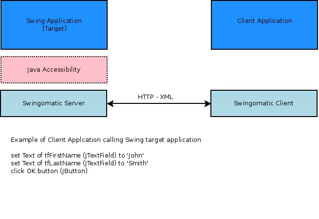

Swingomatic is a program which provides a server interface to a Java Swing application. It leverages an older release of Sun/Oracle's Java Accessibility utilities along with an embedded mini HTTP server. XML is used to pass data between the client and server. The impetus for creating Swingomatic is the automation of a legacy Java Swing application for which there are no immediate plans for replacement.
The intent was to create an interface which somewhat resembles a current web service-like approach to application interoperability. While leveragig an already exsiting Swing testing library would have been an attractive alternative, the restriction of running on an older version of Java (1.3) presented time-intensve challenges. 